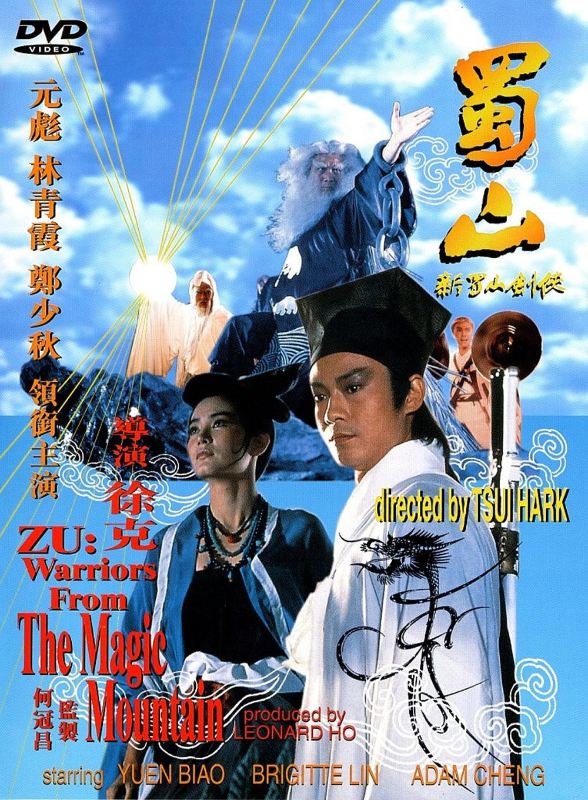
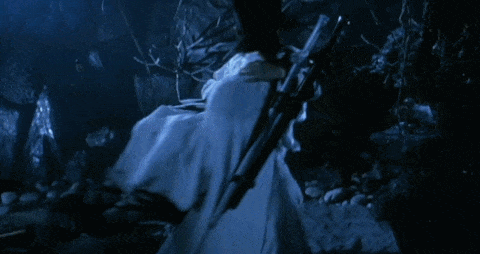
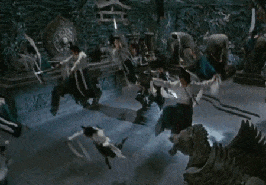
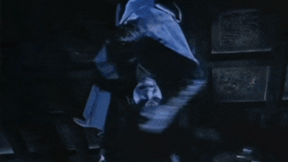
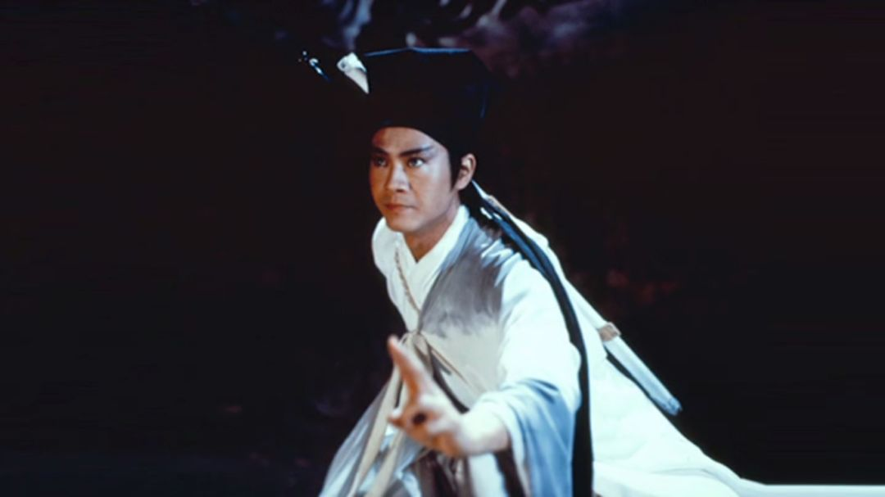
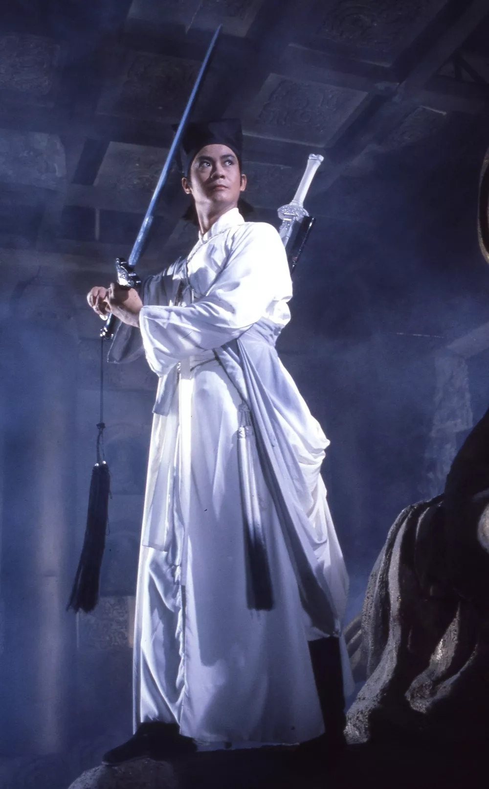
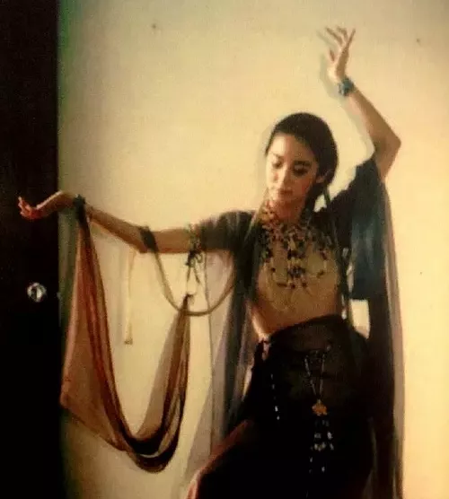
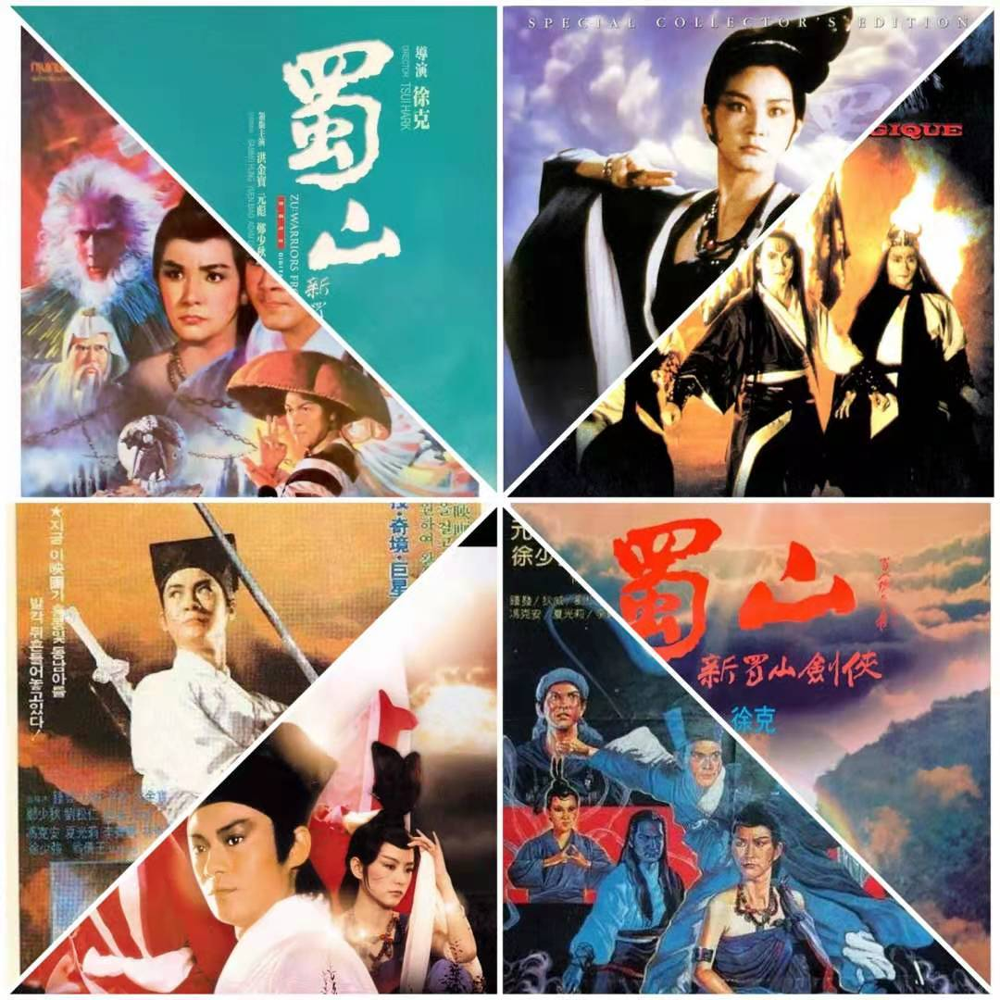

徐克36年前的武侠浪漫，依旧令人心驰神往。

《蜀山：新蜀山剑侠》
年份：1983年
监制：邹文怀
策划：何冠昌
导演：徐克
编剧：水中月、司徒卓汉
主题曲《黄帝子孙》，顾嘉辉作曲，黄霑填词，郑少秋主唱。
秋官清朗的歌声，带我们回到曾经的传奇年代。
01
1977年，《星球大战1》的上映，开创了电影特效的新时代。而徐克因为《鬼马智多星》的成功，有机会拍摄一部特效武侠电影。2000多万港币的嘉禾投资，演员阵容更是极一时之盛，包括郑少秋、林青霞、洪金宝、元彪、徐少强、翁倩玉、刘松仁、李赛凤、孟海等等，足见雄心壮志。当时香港电影还没有掌握“蓝布景”等技术，《新蜀山剑侠》作为香港第一部聘请《星际大战》特技小组制作特技镜头的科幻武侠片，具有划时代的意义。
香港的观众早习惯了邵氏风格传统武侠片的“打来打去”，而在徐克创造的蜀山世界中却是别开生面的“飞天入地”，可想而知该片当时对观众造成的视觉冲击。虽然在香港票房一般，但其想象丰富的特技特效及天马行空的镜头画面却给许多观众留下了深刻印象，电影后来也被誉为“怪力乱神的视觉狂欢”。徐克杰出的视觉艺术在此时已初窥一隅，这也是后来徐克“东方魔幻”新流派武侠片风格的雏形。
02
徐克的江湖从未出现“太平盛世”之景象，《蜀山》亦不例外，而作为江湖中最核心的人，也必须活在乱世之下，在一盘散沙中寻觅超凡脱俗的侠义。
因此，《蜀山》开场便是不同颜色的军队互相厮杀，人间兵荒马乱，天外亦有邪魔作祟。此时本应有正派侠客、英雄豪杰为黎民苍生挺身而战，可惜以南海派剑客丁引（郑少秋饰）及昆仑派掌门人晓如（刘松仁饰）为首的仙门正派一团散沙、自顾不暇，不仅打不过反被血魔附身。拯救苍生的重担终落在一介小兵狄明奇（元彪饰）身上。
影片中很多台词都充满政治隐喻，似乎徐克有意借古讽今：
最后，狄明奇与晓如的徒弟一真（孟海饰）化身紫青双剑与众人合力制服了被血魔附身的丁引，阐明了主旨。
其实影片的思路十分清晰，主题曲中的“黄帝子孙 相偕相伴世上无敌”也印证了这个主旨。但剧情中加入了众多支线故事，就显得比较凌乱。
为解血魔毒，众人来到瑶池仙堡，还掺杂了一段丁引与堡主（林青霞饰）的感情戏，最后结局是两人相拥同归于尽。
值得一提的是，在国际版 Zu: Time Warrior 中，徐克还玩了一把时光倒流，穿插了元彪饰演的男主角与李赛凤饰演的女主角“前世今生”的爱情故事，比港版多了近30分钟。爱情、奇幻、穿越真真是应有尽有，非常贪心了。
为了制造笑点，人物不时插科打诨，喜剧元素冲淡了讽刺意味。明明耿明奇在叹息正派的不团结，观众注意点全在两人的拌嘴上。
插一句，这两人也真是gay里gay气。

要说剧情逻辑也很牵强，耿明奇对于丁引的态度从佩服到厌恶毫无过渡，让人感觉剧情十分跳跃，什么都是点到为止。这也是徐克一贯被诟病的不足之处啦。
03
但如果话题仅止于此，未免有失偏颇了。毕竟该电影改编自还珠楼主的奇幻武侠小说《蜀山剑侠传》，那可是五百万字的恢弘巨著啊。
能在技术条件限制的情况下尽量还原，改编成这份上已属不易。况且电影的画面设计、美术设计和演员造型亦有不同凡响之处。
徐克的特效，如水般柔和，与中国古典完美结合，独有一份韵味。

观众在片中所见的一草一木、仙洞奇峰、光影血剑等镜头，均为人工塑造，无论场景模型还是服饰道具均一丝不苟。徐老怪也是非常有诚意，比现在很多让人觉得违和的数码特效要好得多。
事实证明，特效也是考验想象力和创意的。丁引与晓余携手斗魔教护法的桥段，动作飘逸灵动，场面灿烂夺目，剪辑精彩，令人目不暇接。

反倒是最后一场“紫青双剑合璧诛血魔”的戏，花费300美元请好莱坞特效团队运用蓝布景技术制作完成。然而对于现在习惯了各种蓝幕绿幕特效的我们，绚丽程度反而不如之前以模型为主的土法特效。也有说法是后半段预算不够了。
在演员造型方面，也是下足了功夫。郑少秋的剑侠造型，潇洒飘渺。原以为戴着纱帽会显得比较高冷禁欲；可后面一笑起来，加上那飞扬的眼线，端的那个神采飞扬。凛凛然一片剑影，在光影的衬托下，真真是长身玉立，英姿飒爽。


后来丁引被血魔附身，披发红衣的造型，眼色凌厉，更是妖孽。
不禁遥想起原著小说中的丁引（小说中名为邓隐），也是一个颇为令读者惋惜的角色。
“少年名叫郑隐，生得猿臂蜂腰，面如冠玉，英姿飒爽，气字安详，是个英俊美少年。休说这等豪爽慷慨，便那品貌谈吐和那一身武功，先已佩服。”（长眉真人传 第四回）
如此人物，最后只落得个形神俱灭万劫不复的结局。
不过近年来，对于该影片的关注点主要落在林青霞身上，因为实在是太美。美术指导张叔平果然是不同凡响。飘逸灵动的飞天造型，宛如敦煌壁画中的仙女翩然而至。

04
《新蜀山剑侠》可以说是标准的评价两极，连主演之一的秋官也表示很无奈。
据说这部片原定为郑少秋、林青霞担正，元彪、孟海等人为配角，但因上述大牌档期问题，导致原为配角的人不断加拍戏份、反倒配角成了主角，主角成了配角。或许这也间接导致了影片的剪辑混乱吧。
但即使是用现在的眼光来评判这部电影，也总能找到亮点。影片中土法特效，即使不够拟真，却有另一番风味和美感，直到现在仍有欣赏价值。此外洪金宝和徐克在片中的客串也是增添了几多趣味。
《蜀山：新蜀山剑侠》，这样一部以仙剑奇侠为根基，以优质特效为支撑的影片，非常适宜老少年们闲暇时光用来追忆武侠情怀。
目前能在网络上搜索到的海报、DVD版本众多。

下面也推荐一些该片的资源：
在线：
画质最高清：简体字幕、国语配音 ➾
版本最经典：繁体字幕、英文字幕、粤语配音 ➾
需要翻墙：无字幕、粤语配音 ➾
网盘（提取码sg3e）：
加长国际完整版：繁体字幕、英语配音、国语配音 ➾
特别鸣谢
《蜀山》：徐克最佳脑洞，林青霞最高颜值！
蜀山传：《蜀山传》的寓言性与开创性 | 香港影评库
不过是结局之邓隐（某薇大作，转载） - 简书
徐克访谈：借《蜀山正传》飞回19年前的世界(图)
彼此不要羡慕: 十一月 2010
作者自述
某热爱武侠的理工科，第一次写影评，希望大家多多支持。欢迎留言评论和提出您的宝贵意见及看法。

...
...
Thank you for reading my article!